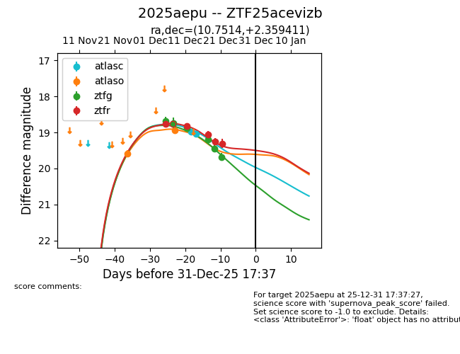
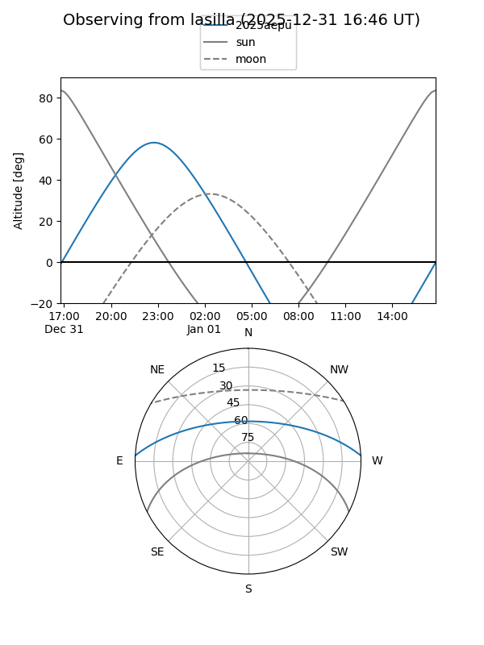
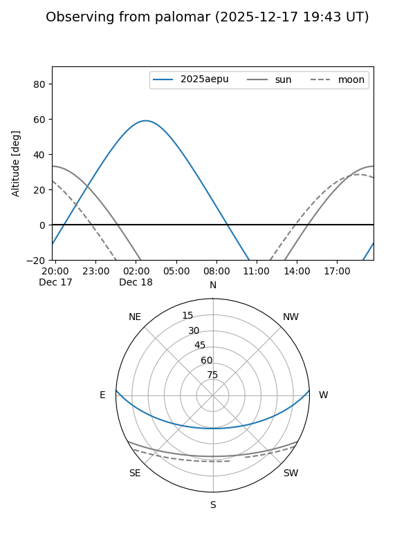
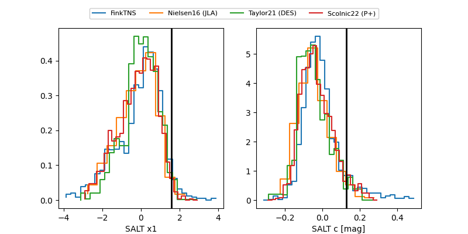

2025aepu
Target 2025aepu at 2025-12-20 03:39
Aliases and brokers:
FINK: fink-portal.org/ZTF25acevizb
Lasair: lasair-ztf.lsst.ac.uk/objects/ZTF25acevizb
ALeRCE: alerce.online/object/ZTF25acevizb
TNS: wis-tns.org/object/2025aepu
YSE: ziggy.ucolick.org/yse/transient_detail/2025aepu
alt names
ZTF25acevizb (ztf,fink_ztf)
2025aepu (tns,yse)
Coordinates:
equatorial (ra, dec) = 10.7514,+2.35941
equatorial (HMS+DMS) = 00:43:00.33,+02:21:33.88
galactic (l, b) = (118.6591,-60.44236)
Flags:
Photometry:
last atlasc=19.04, atlaso=18.93, ztfg=19.44, ztfr=19.25
2 atlasc, 2 atlaso, 5 ztfg, 4 ztfr detections
Lightcurve

Visibility


Additional plots
